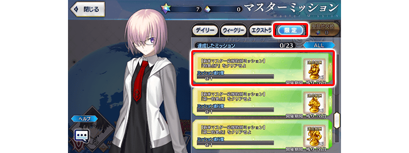

以期間限定舉辦「新手御主聲援宣傳活動」。
向剛開始「Fate/Grand Order」的新手御主，實施好友欄位擴張、限定任務的追加、友情點數獲得量2倍等！
新手御主的各位請藉此機會活用宣傳活動，享受「Fate/Grand Order」的世界。
※本宣傳活動所有的御主皆為對象。
◆宣傳活動舉辦期間◆
2021年8月16日(一) 17:00～10月31日(日) 22:59
※本頁面皆為開發中圖片。會有與實際圖片相異的情況。
向所有的御主對象，無論御主等級問，「好友數」追加擴張3欄位。
因此原本好友欄位初始值25人擴張至28人份。
◆翻新實施時間◆
2021年8月16日(一) 17:00～
【好友欄位的擴張數】
| 對象持有欄位 | 擴張數 |
|---|---|
| 好友欄位的初期値 | 25→28(3人份追加) |
下述的期間中，在「御主任務」的「限定」標籤內以期間限定追加「新手御主聲援特別任務」。
從本任務追加後，靠「被承認好友申請」「承認好友申請」「跟隨其他玩家」任一增加新的好友或跟隨，皆計算換好友和跟隨增加任務的人數。
達成所有任務的話，可入手靈基再臨素材和聖晶石3個、呼符1張！
※「新手御主聲援特別任務」的追加，所有的御主皆為對象。
◆舉辦期間◆
2021年8月16日(一) 17:00～10月31日(日) 22:59
◆領取期間◆
2021年8月16日(一) 17:00～11月7日(日) 22:59

◆追加限定任務◆
| 任務名稱 | 任務達成報酬 | |
|---|---|---|
|
【新手御主聲援特別任務】 好友・跟隨增加1人 |

|
劍階銀像 5個 |

|
弓階銀像 5個 | |

|
槍階銀像 5個 | |
|
【新手御主聲援特別任務】 好友・跟隨增加2人 |

|
騎階銀像 5個 |

|
術階銀像 5個 | |
|
【新手御主聲援特別任務】 好友・跟隨增加3人 |

|
殺階銀像 5個 |

|
狂階銀像 5個 | |
|
【新手御主聲援特別任務】 通過『特異點F』 |

|
劍階金棋 5個 |

|
弓階金棋 5個 | |

|
槍階金棋 5個 | |
|
【新手御主聲援特別任務】 通過『第一特異點』 |

|
騎階金棋 5個 |

|
術階金棋 5個 | |
|
【新手御主聲援特別任務】 通過『第二特異點』 |

|
殺階金棋 5個 |

|
狂階金棋 5個 | |
|
【新手御主聲援特別任務】 通過『第三特異點』 |

|
聖晶石 1個 |
|
【新手御主聲援特別任務】 通過『第四特異點』 |
|
聖晶石 2個 |
|
【新手御主聲援特別任務】 通過『第五特異點』 |

|
呼符 1張 |
※請注意舉辦期間與領取期間有所差異。 ※在期間中就算好友數減少也不會讓任務進行度減少，已達成任務不會變未達成。 ※只計算在舉辦期間中登錄成好友或跟隨的玩家。 ※好友・跟隨1人算1次，同個玩家就算重複登錄也不會計算。 ※請注意與每週日23:00更新的普通任務(Weekly)不同欄位，超過領取期間的話無法入手報酬。 ※就算已經通過從『特異點F』到『第五特異點』的玩家，也同様能領取通過報酬。 ※就算達成「【新手御主聲援特別任務】」，也不會計算在普通任務(Weekly)的任務進行度。 ※根據主線故事的進行度會有無法達成「【新手御主聲援特別任務】」的情況。

下述的期間中，在關卡開始時的支援選擇畫面，選擇其他御主的對象從者做支援情況、其他御主選擇自己的對象從者做支援情況，友情點數獲得量變成2倍。
藉此機會入手更多友情點數吧！
◆舉辦期間◆
2021年8月16日(一) 17:00～8月31日(二) 22:59
※請注意與宣傳活動的結束時間不同。
※非好友的御主也是友情點數獲得量2倍的對象。 ※請注意Guest從者的情況為友情點數獲得量2倍的對象外。
在迦勒底之門內每天輪流出現的關卡以期間限定消耗AP變成1/2！(就算在戰鬥中撤退的情況，也會是同様的消耗量)
並且，在迦勒底之門內以期間限定開放全種類迦勒底之門內每日出現的關卡「蒐集種火」與「修練場」。
◆舉辦期間◆
2021年8月16日(一) 17:00～8月23日(一) 11:59
※請注意與宣傳活動的結束時間不同。
◆對象關卡◆
・蒐集種火
【新手御主聲援】週一 蒐集種火<殺・槍篇>初級、中級、上級、超級、極級
【新手御主聲援】週二 蒐集種火<騎・劍篇>初級、中級、上級、超級、極級
【新手御主聲援】週三 蒐集種火<術・弓篇>初級、中級、上級、超級、極級
【新手御主聲援】週四 蒐集種火<槍・殺篇>初級、中級、上級、超級、極級
【新手御主聲援】週五 蒐集種火<劍・騎篇>初級、中級、上級、超級、極級
【新手御主聲援】週六 蒐集種火<弓・術篇>初級、中級、上級、超級、極級
【新手御主聲援】週日 蒐集種火<隨機篇>初級、中級、上級、超級、極級
・修練場
【新手御主聲援】週一 弓之修練場 初級、中級、上級、超級
【新手御主聲援】週二 槍之修練場 初級、中級、上級、超級
【新手御主聲援】週三 狂之修練場 初級、中級、上級、超級
【新手御主聲援】週四 騎之修練場 初級、中級、上級、超級
【新手御主聲援】週五 術之修練場 初級、中級、上級、超級
【新手御主聲援】週六 殺之修練場 初級、中級、上級、超級
【新手御主聲援】週日 劍之修練場 初級、中級、上級、超級
・打開寶物庫之門
打開寶物庫之門 初級、中級、上級、超級、極級
※以期間限定出現的「蒐集種火」及「修練場」會繼承「關卡情報」到平常每天輪流出現的「蒐集種火」及「修練場」關卡。
【每日關卡一覧】
| 關卡名 | 做為戰利品可獲得的 主要道具 |
攻略推薦 職階 |
|---|---|---|
| 【新手御主聲援】 週一 蒐集種火<殺・槍篇> AP1/2 |
Assassin、Lancer、Berserker的經驗值卡 |   |
| 【新手御主聲援】 週二 蒐集種火<騎・劍篇> AP1/2 |
Rider、Saber、Berserker的經驗值卡 |   |
| 【新手御主聲援】 週三 蒐集種火<術・弓篇> AP1/2 |
Caster、Archer、Berserker的經驗值卡 |   |
| 【新手御主聲援】 週四 蒐集種火<槍・殺篇> AP1/2 |
Lancer、Assassin、Berserker的經驗值卡 | |
| 【新手御主聲援】 週五 蒐集種火<劍・騎篇> AP1/2 |
Saber、Rider、Berserker的經驗值卡 | |
| 【新手御主聲援】 週六 蒐集種火<弓・術篇> AP1/2 |
Archer、Caster、Berserker的經驗值卡 | |
| 【新手御主聲援】 週日 蒐集種火<隨機篇> AP1/2 |
Saber、Archer、Lancer、Rider、Caster、Assassin、Berserker的經驗值卡(隨機) | - |
| 【新手御主聲援】 週一 弓之修練場 AP1/2 |
Archer的靈基再臨用道具、Archer的技能強化素材道具 |  |
| 【新手御主聲援】 週二 槍之修練場 AP1/2 |
Lancer的靈基再臨用道具、Lancer的技能強化素材道具 | |
| 【新手御主聲援】 週三 狂之修練場 AP1/2 |
Berserker的靈基再臨用道具、Berserker的技能強化素材道具 | ALL |
| 【新手御主聲援】 週四 騎之修練場 AP1/2 |
Rider的靈基再臨用道具、Rider的技能強化素材道具 |  |
| 【新手御主聲援】 週五 術之修練場 AP1/2 |
Caster的靈基再臨用道具、Caster的技能強化素材道具 | |
| 【新手御主聲援】 週六 殺之修練場 AP1/2 |
Assassin的靈基再臨用道具、Assassin的技能強化素材道具 | |
| 【新手御主聲援】 週日 劍之修練場 AP1/2 |
Saber的靈基再臨用道具、Saber的技能強化素材道具 | |
| 打開寶物庫之門 AP1/2 | QP | |
※Berserker在所有每日關卡皆為有效職階。
下述的期間中，在進行從者及概念禮裝的強化時，大成功(經驗值2倍加成)・極大成功(經驗值3倍加成)發生機率以期間限定變成2倍！
務必藉此機會強化中意的從者和概念禮裝吧！
※概念禮裝強化＆進化時的大成功・極大成功的獲得EXP增加不適用「累積EXP」。
◆舉辦期間◆
2021年8月16日(一) 17:00～8月23日(一) 11:59
※請注意與宣傳活動的結束時間不同。